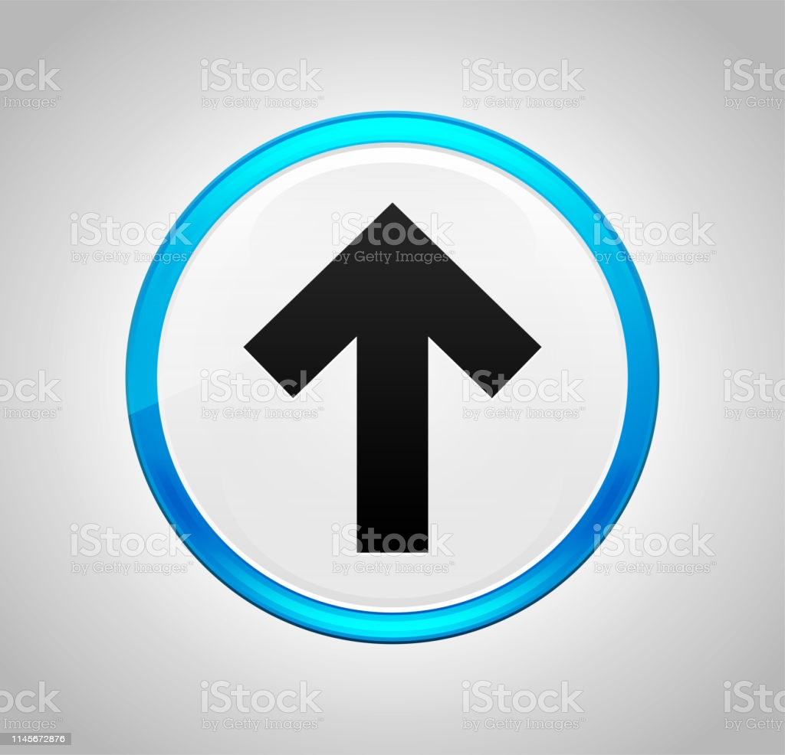

L'Entreprise AQUATECH INNOVATION
Histoire
La start-up AquaTech Innovation a été fondée à
Montpellier le 3 août 2018 par 2 associés : Geneviève MARAIS et Dominique LASSABLIERE.
L’entreprise innove et créer des équipements
permettant de collecter, recycler et traiter des eaux usés noires et grises des bateaux ou de régénérer
les eaux de bassins de piscine pour pouvoir la réutiliser.
Le but de cette entreprise est de préserver notre
ressource en eau et de réduire les risques de contamination liés à la pollution des eaux.
L’entreprise est très active sur la protection de
l’environnement et elle s’investit particulièrement dans l’impact écologique qu’ont ces équipements
sur l’écosystème.
Grâce à ces nombreux concepts innovants,
l’entreprise a reçu le label de GreenTech Innovation par le ministère de la transition écologique
ainsi que plusieurs autres lauréats en 2020-2021 pour récompenser leurs efforts.
Aujourd’hui, la jeune entreprise compte 5 à 10
salariés et, grâce à leurs incubations au Bic de Montpellier, elle peut compter sur l’aide de
nombreux partenaires comme la Région Occitanie, Pôle Mer ou Urban Lab.
Modèles économiques
L’entreprise produit 2 projets de station
de traitement :
- AquaCleaner : station de traitement des
eaux de piscines pour pouvoir réinjecter une eaux propres et saines dans les bassins
- AquaClear : station de collecte, traitement
et recyclage des eaux usés noires et grises des bateaux.
L’entreprise développe actuellement 1 projet qui
est en cours de conception et ils sont également en recherche de partenaire pour réaliser sa preuve
de concept.
Dépense :
- Dépôts de brevet des 2 innovations
listées précédemment
- Recherche et développement de
nouveaux produits : la société est très investit dans la recherche.
Recette :
- Vente des stations et abonnement
annuel
- La présidente de la start-up
souhaiterai aussi lancé une lever de 1 M€ pour accélérer sa production, doper ses capacités et
promouvoir ses offres.
- (source:https://www.lalettrem.fr/la-
lettre-m/genevieve-marais-aquatech-innovation). L’entreprise réalise un chiffre d’affaires de 800 k€
en 2021 et pourrait atteindre 5 M€ dans 2 ans.
Modèle adopté :
Le modèle économique de l’entreprise est la
production en propre. Le client achète le produit, l’entreprise le fabrique et le client reçois son
produit.
Etude de la chaine de
valeur
L’entreprise possède 2 bâtiments généraux : 1
situé à LE ROBERT à Montpellier qui regroupe l’administration et la direction effective de
l’entreprise et le deuxième bâtiment ou sont regroupées les activités de production de l’entreprise.
Ainsi, les activités principales de
l’entreprise se retrouvent dans le deuxième bâtiment comme la fabrication de pièces techniques à
base de matières plastiques ainsi que l’approvisionnement des matériaux plastiques.
L’entreprise garantit également que leurs
produits s’inscrivent dans une économie circulaire et qu’ils demandent peu d’entretien.
Au niveau de la vente, le client a accès à toutes
l’information nécessaire sur le site de l’entreprise. L’entreprise se classe dans un marché B2B/B2C.
Les activités de soutiens de retrouvent dans le
premier bâtiment avec les services de communications. L’entreprise possède également une forte
activité dans le développement de nouveaux produits.
La communication entre les différentes
fonctions se fait facilement car les deux bâtiments principaux se trouvent dans la mème zone
géographique.

(ci-dessus, un tableau regroupant les différents
fonctions des activités principales et de soutien d'une entreprise.)
Environnement
concurrentiel
Approche concurrentiel : Analyse
Porter :
Entrants : Les menaces peuvent
être :
- Une modification des navires
modernes pour réduire leurs rejetés d’eaux sales (aquaCleaner ne sert plus)
- Une prise de conscience de la
population qui achète moins de piscine pour préserver l’eau sur Terre. (AquaClear ne sert plus)
- Une grosse entreprise internationale
spécialisé dans les mêmes produits peut s’implanter en France et faire baisser les parts du marché
d’AquaTech Innovation (car c’est une jeune start-up).
Fournisseurs et clients
- Les principaux fournisseurs de
l’entreprise sont les fabricants de plastiques.
- La vente aux clients permet
d’engranger des bénéfices et de recevoir des éventuelles critiques sur le produit pour
l’améliorer.
Substituts
- Les produits formés sont les stations
d’épurations..
Démarche SWOT

Enjeux écologiques, sociaux et
politiques
On peut faire un diagnostic externe d'une
entrteprise grâce à l'analyse PESTEL qui analyse les menaces et opportunités de l'environnement.
On peut regrouper les différentes parties dans un tableau comme ci-dessous.

